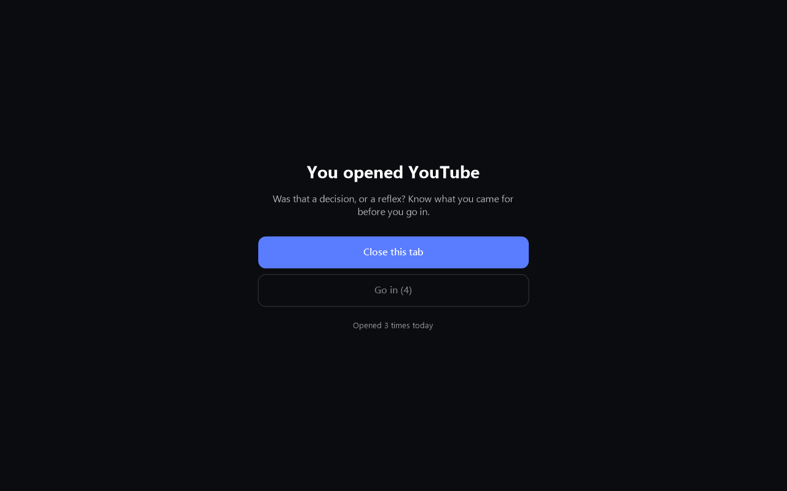
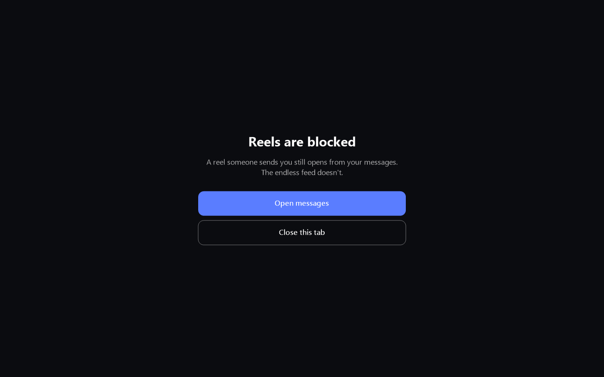
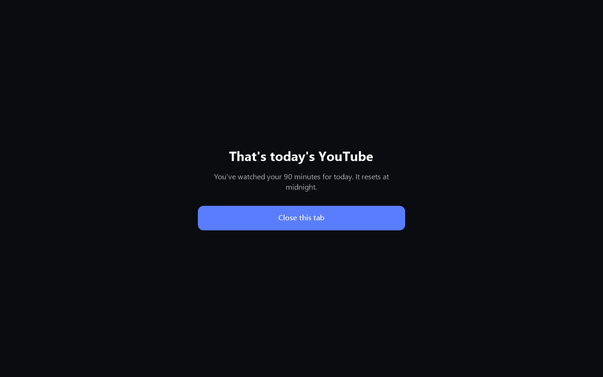

- Messages always work, with no pauses or limits
- Opening Instagram takes you to your messages, not the feed
- The Reels feed and Explore are blocked
- A post or reel someone sends you still opens
What it does
You still get the things you went there for. The endless feeds don't load.
YouTube
- Search, subscriptions and channels all work
- Shorts disappear, and a Shorts link plays as a normal video
- No recommendations on the home page, beside videos or after them
- Want to browse? A button brings the home page back for a while
- Autoplay off, and a daily watch-time limit
Episode limits
- For anime and other streaming sites you add yourself
- A daily limit on episodes and on time
- A question before each new episode, so binges don't happen on autopilot
Protection
- Adult and gambling sites blocked, even when a site redirects you there
- Program downloads stopped until you say yes
- Pop-up tabs and sneaky redirects stopped on risky sites
TikTok
Blocked completely. You can turn this off.
A pause before you go in
Open YouTube and you get a few seconds and one question: was that a decision, or a reflex?
A lock for weak moments
Stricter settings apply at once. Looser ones, including turning the lock off, wait 24 hours.
What you'll see
Calm, plain screens where the feed used to be.



Private by design
Everything stays on your computer. Unplugged has no account, no servers and no analytics, and it never sends your data anywhere. Site blocking happens inside your browser from lists built into the extension. Its scripts run on YouTube, Instagram and TikTok, and on another site only after you add it and allow it. Read the privacy policy.
Get started
- Add Unplugged from the Chrome Web Store or, on Edge, from Microsoft Edge Add-ons.
- Pin it from the puzzle-piece menu next to the address bar, and click it to open the settings.
- To cover private windows too, open the extension's Details and turn on Allow in Incognito.